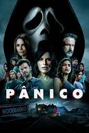
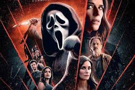
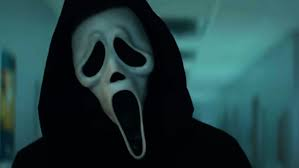

<!DOCTYPE html>
<html lang="en">
<head>
    <meta charset="UTF-8">
    <meta name="viewport" content="width=device-width, initial-scale=1.0">
    <title>isadora</title>
</head>
<body>
    <link rel="stylesheet"href="style.css">
</body>
</html>

<i>PÂNICO</i>
<h1>Lançando em janeiro de 2022 nos cinemas de todo o mundo, Pânico (Scream, no original) consiste na quinta obra da consagrada franquia de terror de mesmo 
nome,criada pelo roteirista e produtor Kevin Williamson. E, caso você ainda não tenha assistido a produção, temos uma ótima notícia:
Pânico 5 já está disponível na Netflix!></h1>
<i>A SAGA</i>
<h2>A saga Pânico começa quando Sidney Prescott (Neve Campbell) é atormentada por um assassino em série, e sobrevive aos seus ataques ao longo dos anos e de 
mais três filmes. Essa fórmula esteve presente em todos os longas, sendo ela a grande protagonista, mas no quinto filme da franquia as coisas foram um pouco
diferentes.</h2>

<i>SINOPESE</i>
<h3>Em Woodsboro, a adolescente Tara é atacada em sua casa por uma pessoa vestida com a máscara de Ghostface. Logo, descobre-se que a motivação pode estar 
ligada a um segredo no passado de sua irmã, Sam. Conforme as revelações vêm à tona, os crimes se multiplicam, em conexão com as mortes originais. 
Sidney Prescott, Gale Riley e Dewey Rileyprecisam retornar ao cenário de seus traumas passados para impedirem uma nova tragédia na cidade.</h3>
<i>QUEM SÂO OS GHOSTFACE</i>

<h4>Se você já assistiu os outros filmes da franquia Pânico, sabe que, a cada projeção, a identidade do criminoso Ghostface muda. Ou seja, em cada uma das obras de terror, há uma nova figura na pele do vilão. E, em Pânico 5, isso não é diferente.
No terceiro ato de Pânico 5, descobrimos que, desta vez, o serial killer é mais do que apenas uma pessoa, mas, sim, duas: os personagens Richie Kirsch 
(Jack Quaid) e Amber Freeman (Mikey Madison). Durante o fim da narrativa, eles explicam seus planos maléficos de manter a franquia de terror fictícia 
citada na série viva e incriminar Sam Carpenter (Melissa Barrera) por todos os assassinatos.
Para tanto, os dois reúnem Sam e Tara Carpenter (Jenna Ortega), bem como os demais personagens centrais da história, em uma casa. Lá, eles revelam suas
identidades e entram em um confronto mortal contra as protagonistas. Mas, por sorte, ela
vencem a batalha.</h4>
<im id="imal4"src="gost.jpeg">